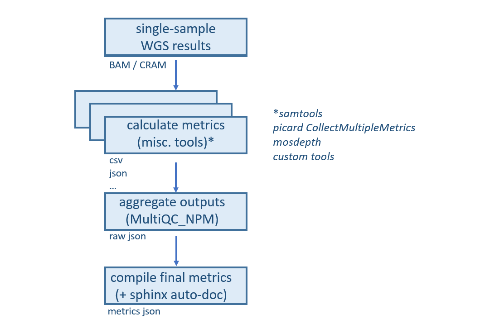

NPM-sample-qc
NPM-sample-qc is a Nextflow workflow to obtain QC metrics from single-sample WGS results. It has been created to support QC efforts within the National Precision Medicine programme in Singapore (NPM). In collaboration with GA4GH , the WGS_Quality_Control_Standards was formed with this workflow as first reference implementation of the standards.
Requirements
Install Nextflow v23.04 or higher
Install and configure AWS CLI
Quick start
Clone this repository
git clone git@github.com:c-BIG/NPM-sample-qc.git
Run workflow on 45Mbp region around AKT1 gene, 30X, of sample NA12878 from the 1000 Genomes Phase 3 Reanalysis with DRAGEN 3.7
# Move to test folder
cd tests/NA12878-chr14-AKT1_1000genomes-dragen-3.7.6/
# Run the workflow
sh run.sh
This creates output directory with the results that can be compared to the content of output_certified
diff output_certified/results/metrics/NA12878-chr14-AKT1.metrics.json output/results/metrics/NA12878-chr14-AKT1.metrics.json
Please refer to the workflow help for more information on its usage and access to additional options:
nextflow run NPM-sample-qc/main.nf --help
Understanding the workflow
Resources
The workflow requires the following resources given in the conf/resources.config
N-regions reference file, used as an input for computing “non-gap regions autosome” coverages (mosdepth).
Gaps in the GRCh38 (hg38) genome assembly, defined in the AGP file delivered with the sequence, are being closed during the finishing process on the human genome. GRCh38 (hg38) genome assembly still contains the following principal types of gaps:
short_arm - short arm gaps (count: 5; size range: 5,000,000 - 16,990,000 bases)
heterochromatin - heterochromatin gaps (count: 11; size range: 20,000 - 30,000,000 bases)
telomere - telomere gaps (count: 48; all of size 10,000 bases)
contig - gaps between contigs in scaffolds (count: 285; size range: 100 - 400,000 bases)
scaffold - gaps between scaffolds in chromosome assemblies (count: 470; size range: 10 - 624,000 bases)
Gaps in the GRCh38 (hg38) genome assembly were downloaded from http://hgdownload.soe.ucsc.edu/goldenPath/hg38/database/gap.txt.gz (
2019-03-11 09:51, 12K).
Human Reference Genome FASTA file, used as an input for multiple tools.
This file can be downloaded from s3://broad-references/hg38/v0/Homo_sapiens_assembly38.fasta.
FASTA file index. This file can be downloaded from
s3://1000genomes-dragen-3.7.6/references/fasta/hg38.fa.faiand not required to be specified in the config. The workflow will look fasta index file in a folder the fasta file is present.
Inputs
Input requirements can be split into two categories:
Generic workflow settings specify parameters that will not vary from run to run, e.g.
Nextflow profile declarations, trace/timeline/report/dag options, output structure and paths to data resources.
See nextflow.config for additional details.
Sample-specific settings contain paths to WGS data for a given sample, namely BAM/CRAM.
The workflow expects the BAM/CRAM index (bai/crai) to be present in the same location.
See tests/NA12878-chr14-AKT1_1000genomes-dragen-3.7.6/params.yml for an example.
If accessing AWS S3 public resources (for example reference genome .fa, .fai or bam/cram) without any AWS user credential,
append aws_no_sign_request: true to your parameter list (params.yaml or commandline argument).
See tests/NA12878_1000genomes-dragen-3.7.6/params.yml for an example.
Outputs
Upon completion, the workflow will create the following files in the outdir directory:
/path/to/outdir/
pipeline_info/ # dag, timeline and trace files
dag.pdf
report.html
timeline.html
trace.txt
results/ # final metrics.json and intermediate outputs
metrics/<sample_id>.metrics.json
mosdepth/
multiqc/
picard_collect_multiple_metrics/
samtools/
If keep_workdir has been specified, the contents of the Nextflow work directory (work-dir) will also be preserved.
Docker image
By default the workflow pull the docker image from dockerhub. However you can also build docker image locally
# Move to containers
cd NPM-sample-qc/containers
# Build docker image locally
sh build_npm-sample-qc_docker_image.sh
Workflow logic
We provide a schematic representation of the workflow in the figure below:
In a nutshell, this workflow generates QC metrics from single-sample WGS results in three stages: metrics calculation, parsing of intermediate outputs and generation of a final report. This makes it possible to take full advantage of the parallelisation capabilities of Nextflow, allows users to leverage third-party tools or add custom scripts, and enables auto-documentation of metrics from code comments.
Metrics calculation
The current workflow combines widely-used third-party tools (samtools, picard, mosdepth) and custom scripts. Full details on which processes are run/when can be found in the actual workflow definition (main.nf). We also provide an example dag for a more visual representation (tests/NA12878_1000genomes-dragen-3.7.6/dag.pdf).
Metrics parsing
Next, output files from each individual tool are parsed and combined into a single json file. This is done by calling bin/multiqc_plugins/multiqc_npm/, a MultiQC plugin that extends the base tool to support additional files.
Metrics reporting
Finally, the contents of the MultiQC json are formatted into a final metrics report, also in json format. The reporting logic lives in the bin/compile_metrics.py script, and whilst its contents are simple, it enables automatic documentation of metric definitions from code comments (see the Metric definitions section).
Metric definitions
The full list of metrics reported by this workflow and details on how they’ve been calculated can be found here.
When needed, page contents can be updated by running the following command:
# Install sphinx
pip install sphinx_rtd_theme sphinx_automodapi
# Move to doc source
cd docsrc
# Build the doc
./build.sh
Metric definitions